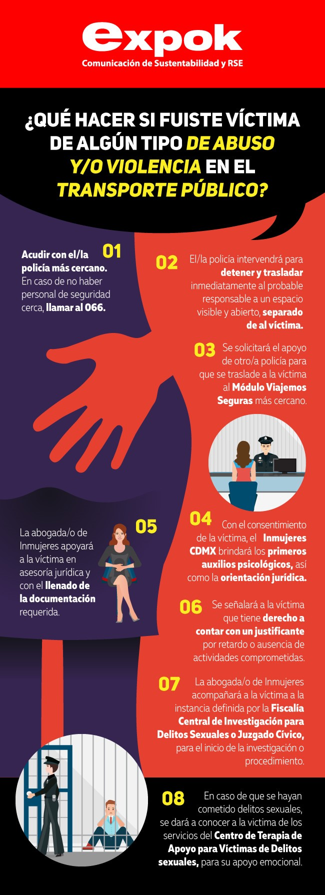

- En caso de que estés dentro de un vagón del metro, no dudes en activar la palanca de seguridad. Si te sucede en otro medio de transporte, auxíliate directamente con el operador de la unidad.
- En el módulo recibirás apoyo por parte de una abogada del instituto Nacional de las Mujeres (Inmujeres), quien se encargará de asesorarte jurídicamente sobre tus derechos.
- Posteriormente, si decidiste iniciar el proceso de denuncia, serás apoyada y orientada por algún representante de la Fiscalía Central de Investigación para Delitos Sexuales de la Procuraduría General de Justicia de la capital.
- Mientras se lleve a cabo el caso, un abogado de Inmujeres, junto con el Consejo Ciudadano de Seguridad Pública y Procuración de Justicia de la Ciudad de México, seguirá de cerca el procedimiento.

SALIR